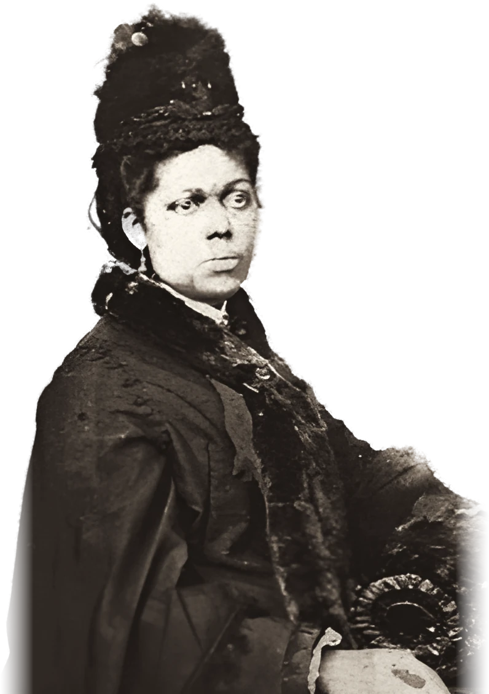

{% comment %}
  Page content only. The header, menu and footer come from _includes/.
  Everyday details (addresses, deadlines, lists) come from _data/club.yml, shown below as club.something.
  Any other wording can be edited right here, between the tags.
{% endcomment %}
{% assign club = site.data.club %}
  <main id="main">
    <!-- Opening -->
    <section style="position: relative; overflow: hidden; background: #EDE4D3; border-bottom: 1px solid #D9CDB8">
      <div class="wrap g" style="align-items: end; min-height: 560px">
        <div class="s7" style="display: flex; flex-direction: column; gap: 24px; padding: 88px 0 72px">
          <h1 class="pg-in" style="margin: 0; font-family: 'Libre Caslon Display', serif; font-weight: 400; font-size: clamp(56px, 8.5vw, 132px); line-height: 0.92; letter-spacing: -0.02em; color: #4F246E">Martha<br>Bailey<br>Briggs</h1>
          <div class="pg-2" style="display: flex; align-items: center; gap: 16px">
            <span style="font-family: 'Libre Caslon Display', serif; font-weight: 400; font-size: 32px; line-height: 1">1838–1889</span>
            <span class="pg-rule" aria-hidden="true" style="display: block; width: 96px; height: 1px; background: #B8892B"></span>
          </div>
          <p class="pg-3" style="margin: 0; max-width: 540px">A New Bedford educator who taught people who had escaped slavery to read and write, and went on to train African American teachers in Washington, DC.</p>
        </div>
        <figure class="o1" style="margin: 0; display: flex; flex-direction: column; align-items: center; align-self: end">
          
        </figure>
      </div>
      <p class="wrap" style="margin: 0 auto; padding-bottom: 12px; font-size: 13px; color: #5E554D">Photo: New Bedford Historical Society, via <a href="https://historicwomensouthcoast.org/martha-bailey-briggs/">Lighting the Way</a>; digitally enhanced.</p>
    </section>

    <!-- Journey -->
    <section class="sp-m" aria-labelledby="mx-journey-h" style="padding-top: 88px; padding-bottom: 24px">
      <div class="wrap mx-journey" style="display: flex; flex-direction: column; gap: 24px">
        <div style="display: flex; flex-wrap: wrap; justify-content: space-between; align-items: flex-end; gap: 8px 32px">
          <h2 id="mx-journey-h" class="h2" style="margin: 0; font-family: 'Libre Caslon Display', serif; font-weight: 400; line-height: 1.1">Where she taught</h2>
          <p style="margin: 0; font-size: 15px; color: #5E554D">Select a place to read more.</p>
        </div>
        <div class="mx-jscroll">
          <div class="mx-jtrack">
            <svg viewBox="0 0 1000 300" preserveAspectRatio="none" aria-hidden="true">
              <path class="mx-jbase" d="M80 90 C165 90 165 210 250 210 S335 90 420 90 S505 210 590 210 S675 90 760 90 S845 210 930 210"></path>
              <path class="mx-jline" d="M80 90 C165 90 165 210 250 210 S335 90 420 90 S505 210 590 210 S675 90 760 90 S845 210 930 210"></path>
            </svg>
            <span class="mx-traveler" aria-hidden="true"></span>
            <button type="button" class="mx-stop up" data-x="80" data-y="90" aria-pressed="true" aria-controls="mx-p1"><span class="dot"></span><span class="lbl"><b>New Bedford</b><small>1838–1850s</small></span></button>
            <button type="button" class="mx-stop down" data-x="250" data-y="210" aria-pressed="false" aria-controls="mx-p2"><span class="dot"></span><span class="lbl"><b>Bridgewater</b><small>Before 1859</small></span></button>
            <button type="button" class="mx-stop up" data-x="420" data-y="90" aria-pressed="false" aria-controls="mx-p3"><span class="dot"></span><span class="lbl"><b>Martha’s Vineyard</b><small>Before 1859</small></span></button>
            <button type="button" class="mx-stop down" data-x="590" data-y="210" aria-pressed="false" aria-controls="mx-p4"><span class="dot"></span><span class="lbl"><b>Newport</b><small>Before 1859</small></span></button>
            <button type="button" class="mx-stop up" data-x="760" data-y="90" aria-pressed="false" aria-controls="mx-p5"><span class="dot"></span><span class="lbl"><b>Easton</b><small>1867–1869</small></span></button>
            <button type="button" class="mx-stop down" data-x="930" data-y="210" aria-pressed="false" aria-controls="mx-p6"><span class="dot"></span><span class="lbl"><b>Washington, DC</b><small>1869–1889</small></span></button>
          </div>
        </div>
        <div class="mx-jdetail" aria-live="polite">
          <div class="mx-jpanel mx-act" id="mx-p1"><h3>New Bedford, Massachusetts</h3><p class="yrs">1838–1850s</p><p>Born here to abolitionist parents and one of the first African American women to graduate from New Bedford High School. She taught day classes for children and evening classes for adults in her father’s home on Allen Street, including people who had escaped slavery.</p></div>
          <div class="mx-jpanel" id="mx-p2"><h3>Bridgewater, Massachusetts</h3><p class="yrs">Before 1859</p><p>Trained as a teacher at the Bridgewater Normal School.</p></div>
          <div class="mx-jpanel" id="mx-p3"><h3>Martha’s Vineyard, Massachusetts</h3><p class="yrs">Before 1859</p><p>Taught at Christiantown.</p></div>
          <div class="mx-jpanel" id="mx-p4"><h3>Newport, Rhode Island</h3><p class="yrs">Before 1859</p><p>Taught at a private school George T. Downing set up for his children, and served as governess to his family.</p></div>
          <div class="mx-jpanel" id="mx-p5"><h3>Easton, Maryland</h3><p class="yrs">1867–1869</p><p>Taught in Easton, Maryland.</p></div>
          <div class="mx-jpanel" id="mx-p6"><h3>Washington, DC</h3><p class="yrs">1869–1889</p><p>Teacher and principal at the Anthony Bowen School, then taught at Howard University. As principal of the Miner Normal School she saw about 80 teachers graduate in four years, and she later led Howard’s Normal Department, which became its School of Education.</p></div>
        </div>
      </div>
    </section>

    <!-- Timeline -->
    <section class="sp-m reveal" style="padding-top: 88px; padding-bottom: 96px">
      <div class="wrap g">
        <div class="s4" style="display: flex; flex-direction: column; gap: 12px">
          <h2 class="h2" style="margin: 0; font-family: 'Libre Caslon Display', serif; font-weight: 400; line-height: 1.1">Her life</h2>
          <p style="margin: 0; font-size: 15px; color: #5E554D">Numbers in brackets refer to the sources below.</p>
        </div>
        <ol class="o3 mx-tl" style="margin: 0; padding: 0; list-style: none; border-top: 1px solid #1F1A17">
          <li style="display: grid; grid-template-columns: minmax(104px, 170px) minmax(0, 1fr); gap: 16px; padding: 18px 0; border-bottom: 1px solid #D9CDB8"><span style="font-family: 'Libre Caslon Display', serif; font-size: 30px; line-height: 1.15; color: #4F246E">1838</span><span>Born in New Bedford on March 31, the only child of John and Fanny Bassett Briggs, Black abolitionists. <span style="font-size: 14px; color: #5E554D; white-space: nowrap">[1, 3]</span></span></li>
          <li style="display: grid; grid-template-columns: minmax(104px, 170px) minmax(0, 1fr); gap: 16px; padding: 18px 0; border-bottom: 1px solid #D9CDB8"><span style="font-family: 'Libre Caslon Display', serif; font-size: 30px; line-height: 1.15; color: #4F246E">1850</span><span>Enters New Bedford High School in September, at twelve and a half. She becomes one of the first African American women to graduate from the school. <span style="font-size: 14px; color: #5E554D; white-space: nowrap">[2, 3]</span></span></li>
          <li style="display: grid; grid-template-columns: minmax(104px, 170px) minmax(0, 1fr); gap: 16px; padding: 18px 0; border-bottom: 1px solid #D9CDB8"><span style="font-family: 'Libre Caslon Display', serif; font-size: 24px; line-height: 1.15; color: #4F246E">Before 1859</span><span>Teaches day classes for children and evening classes for adults in her father’s home on Allen Street, including people who had escaped slavery. Her father, John Briggs, counted Frederick Douglass among his friends. <span style="font-size: 14px; color: #5E554D; white-space: nowrap">[1, 2]</span></span></li>
          <li style="display: grid; grid-template-columns: minmax(104px, 170px) minmax(0, 1fr); gap: 16px; padding: 18px 0; border-bottom: 1px solid #D9CDB8"><span style="font-family: 'Libre Caslon Display', serif; font-size: 24px; line-height: 1.15; color: #4F246E">Before 1859</span><span>Trains as a teacher at the Bridgewater Normal School. Teaches at Christiantown on Martha’s Vineyard, then in Newport, Rhode Island, where she teaches at a private school George T. Downing set up for his children and serves as governess to his family. <span style="font-size: 14px; color: #5E554D; white-space: nowrap">[2, 3, 4]</span></span></li>
          <li style="display: grid; grid-template-columns: minmax(104px, 170px) minmax(0, 1fr); gap: 16px; padding: 18px 0; border-bottom: 1px solid #D9CDB8"><span style="font-family: 'Libre Caslon Display', serif; font-size: 30px; line-height: 1.15; color: #4F246E">1859</span><span>Myrtilla Miner invites her to teach in Washington, DC. She declines; her father fears for her safety in the South. <span style="font-size: 14px; color: #5E554D; white-space: nowrap">[2, 3, 4]</span></span></li>
          <li style="display: grid; grid-template-columns: minmax(104px, 170px) minmax(0, 1fr); gap: 16px; padding: 18px 0; border-bottom: 1px solid #D9CDB8"><span style="font-family: 'Libre Caslon Display', serif; font-size: 24px; line-height: 1.15; color: #4F246E">1867–1869</span><span>Teaches in Easton, Maryland. <span style="font-size: 14px; color: #5E554D; white-space: nowrap">[3]</span></span></li>
          <li style="display: grid; grid-template-columns: minmax(104px, 170px) minmax(0, 1fr); gap: 16px; padding: 18px 0; border-bottom: 1px solid #D9CDB8"><span style="font-family: 'Libre Caslon Display', serif; font-size: 24px; line-height: 1.15; color: #4F246E">1869–1873</span><span>Joins the Washington, DC public schools, where she becomes a teacher and then principal of the Anthony Bowen School. <span style="font-size: 14px; color: #5E554D; white-space: nowrap">[2, 4]</span></span></li>
          <li style="display: grid; grid-template-columns: minmax(104px, 170px) minmax(0, 1fr); gap: 16px; padding: 18px 0; border-bottom: 1px solid #D9CDB8"><span style="font-family: 'Libre Caslon Display', serif; font-size: 24px; line-height: 1.15; color: #4F246E">1873–1879</span><span>Teaches in the Normal Department at Howard University, later as instructor in mathematics. <span style="font-size: 14px; color: #5E554D; white-space: nowrap">[1, 3]</span></span></li>
          <li style="display: grid; grid-template-columns: minmax(104px, 170px) minmax(0, 1fr); gap: 16px; padding: 18px 0; border-bottom: 1px solid #D9CDB8"><span style="font-family: 'Libre Caslon Display', serif; font-size: 24px; line-height: 1.15; color: #4F246E">1879–1883</span><span>Serves as the third principal of the Miner Normal School, which trains the city’s African American teachers. About 80 teachers graduate during her four years. <span style="font-size: 14px; color: #5E554D; white-space: nowrap">[1, 2, 3]</span></span></li>
          <li style="display: grid; grid-template-columns: minmax(104px, 170px) minmax(0, 1fr); gap: 16px; padding: 18px 0; border-bottom: 1px solid #D9CDB8"><span style="font-family: 'Libre Caslon Display', serif; font-size: 24px; line-height: 1.15; color: #4F246E">1883–1889</span><span>Returns to Howard University as principal of its Normal Department, which later becomes the university’s School of Education. <span style="font-size: 14px; color: #5E554D; white-space: nowrap">[1, 4]</span></span></li>
          <li style="display: grid; grid-template-columns: minmax(104px, 170px) minmax(0, 1fr); gap: 16px; padding: 18px 0; border-bottom: 1px solid #D9CDB8"><span style="font-family: 'Libre Caslon Display', serif; font-size: 30px; line-height: 1.15; color: #4F246E">1889</span><span>Dies in Washington, DC, on March 28, and is buried in New Bedford. A committee of Washington citizens asks that a new school building be named for her. <span style="font-size: 14px; color: #5E554D; white-space: nowrap">[1, 3]</span></span></li>
        </ol>
      </div>
    </section>

    <!-- Sources + next -->
    <section class="sp-m" style="padding-top: 24px; padding-bottom: 96px">
      <div class="wrap g">
        <div class="s4">
          <h2 class="h3" style="margin: 0; font-family: 'Libre Caslon Text', serif; font-weight: 400; line-height: 1.25">Sources</h2>
        </div>
        <div class="o3" style="display: flex; flex-direction: column; gap: 24px">
          <ol style="margin: 0; padding: 0; list-style: none; border-top: 1px solid #1F1A17">
            <li style="padding: 10px 0; border-bottom: 1px solid #D9CDB8; font-size: 16px"><span style="color: #5E554D">1.</span> New Bedford Historical Society, “Martha Bailey Briggs.” <a href="https://nbhistoricalsociety.org/portfolio-item/martha-bailey-briggs/">nbhistoricalsociety.org</a></li>
            <li style="padding: 10px 0; border-bottom: 1px solid #D9CDB8; font-size: 16px"><span style="color: #5E554D">2.</span> Lee Blake, “Martha Bailey Briggs,” <em>Lighting the Way: Historic Women of the SouthCoast</em>. <a href="https://historicwomensouthcoast.org/martha-bailey-briggs/">historicwomensouthcoast.org</a></li>
            <li style="padding: 10px 0; border-bottom: 1px solid #D9CDB8; font-size: 16px"><span style="color: #5E554D">3.</span> Lawson A. Scruggs, <em>Women of Distinction</em> (Raleigh, NC, 1893), chapter XCII, “Miss Martha B. Briggs.” <a href="https://en.wikisource.org/wiki/Women_of_distinction/Chapter_92">en.wikisource.org</a></li>
            <li style="padding: 10px 0; border-bottom: 1px solid #D9CDB8; font-size: 16px"><span style="color: #5E554D">4.</span> Frank Leone, “Funkstown: Martha B. Briggs and Her Lost Schools,” Foggy Bottom Association. <a href="https://www.foggybottomassociation.org/post/funkstown-martha-b-briggs-and-her-lost-schools">www.foggybottomassociation.org</a></li>
          </ol>
        </div>
      </div>
    </section>
  </main>
